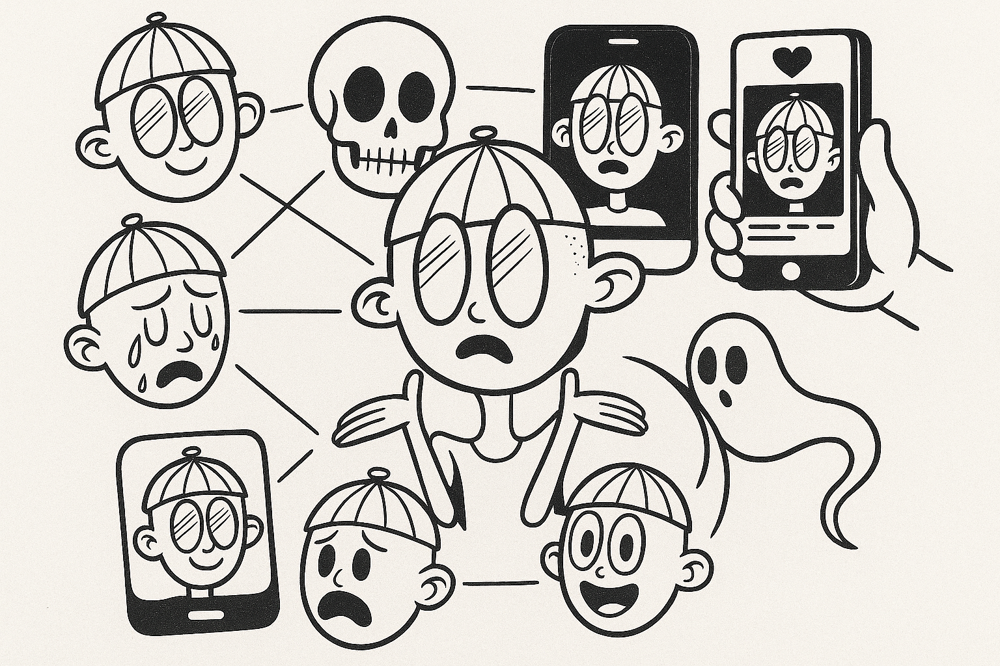

Una lectura sobre la autenticidad, la performatividad y las múltiples versiones del yo en tiempos de feeds infinitos.
“¿Quién soy?” podría ser la entrada más obvia a la exploración de la identidad y la autenticidad, pero quizá sea más certero preguntarse: “¿quiénes soy cuando digo ‘yo’?”. La clave de una posible respuesta está en la propia pregunta: señala la pluralidad implícita que el “yo” contiene.
Ese “yo” no remite a una identidad sólida e inamovible, sino a un conjunto de capas que van desde lo visible —vestimenta, voz, gestos— y lo heredado —origen, creencias, memoria—, hasta los distintos escenarios en los que ese “yo” se despliega —tanto físicos como digitales—, donde esos yo pueden ser y ejercer de acuerdo con lo que cada entorno establece.
Como recuerda Charles Taylor, ser “uno mismo” no sucede en el vacío: ocurre dentro de horizontes de sentido y mediante el reconocimiento de otros. Asumidos críticamente, esos marcos no encadenan; orientan y dan duración a la pluralidad del “yo”.
Ahora bien, cuando los marcos se vuelven tantos y tan heterogéneos, la autenticidad puede diluirse y empujarnos a multiplicar identidades según el escenario. Si la identidad se nutre del reconocimiento —no se fabrica a solas—, se forja en diálogo con otros; por eso no es “monológica”, sino constitutivamente dialógica.
La diversificación de entornos físicos y digitales, además, nos lleva a buscar reconocimiento según la performatividad que cada contexto premia. Como decía Séneca: «La vida es una obra de teatro: lo que importa no es cuánto dure, sino lo bien que se representa».
En esta deriva, cada elección vale porque es mía y “nadie debería juzgar”. El resultado, advierte Taylor, es que se aplanan los criterios y perdemos lenguaje para distinguir entre opciones que merecen durar y caprichos de ocasión.
Por otro lado, esto también condiciona la fragilidad de nuestras relaciones laborales y afectivas: no es solo el algoritmo, la liquidez de la economía o la falta de anclajes lo que nos empuja a buscar nuevas etapas.
Taylor describe este tránsito con la imagen de la “tienda de campaña”: donde antes había lazos duraderos, hoy predominan compromisos reubicables, fáciles de plegar y trasladar.
Negar la multiplicidad sería desconocer la realidad y todo lo que nos constituye. La multiplicidad, bien llevada, exige que el diálogo y el reconocimiento empiecen por uno mismo.
Solo así la autenticidad deja de evaporarse o mutar en cada escenario y se convierte en una forma de vida reconocible, capaz de sostenerse incluso cuando cambia el telón.